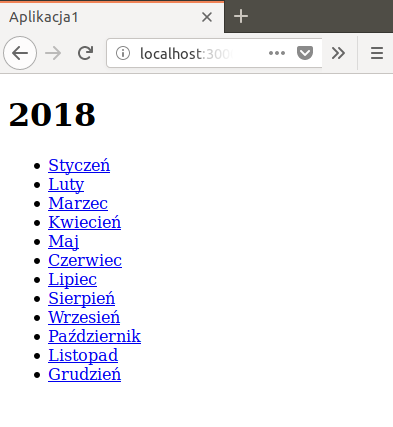
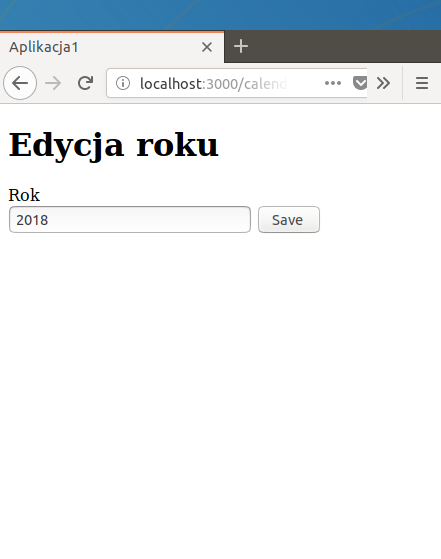

bin/rakedb:seed # Wypełnienie tabel bazy danych - wykonanie komend zawartych w 'db/seeds.rb'
Uruchom konsolę bazy danych (komenda bin/rails dbconsole), a następnie:
Wyświetl strukturę tabeli 'welcomes' (wpisz: .schema --indent welcomes) i sprawdź czy otrzymany wynik jest zgodny z Twoimi przypuszczeniami z punktu 1.4
Wyświetl zawartość tabeli 'welcomes': SELECT "welcomes".* FROM "welcomes"; - sprawdź czy tabela zawiera rekordy wyspecyfikowane w pkt. 1.2
Przy użyciu polecenia bin/rails console uruchom konsolę Ruby on Rails (RoR) i wpisz w niej:
1
2
3
require 'pp'ifRUBY_VERSION< '2.5'
irb_context.echo = false# Wyłączenie echa
#
Zobacz co zwracają poniższe wyrażenia:
1
2
3
4
5
p Welcome.column_names
p Welcome
pp Welcome.all
puts Welcome.all.to_sql
puts Welcome.all.explain
Wyjdź z konsoli za pomocą komendy exit lub sekwencji klawiszy Ctrl+D, a następnie zainstaluj alternatywną konsolę pry-rails, tak jak to opisano poniżej:
Dopisz do pliku Gemfile: gem 'pry-rails', group: [:development, :test]
Wykonaj poniższą komendę:
1
2
3
4
5
bin/bundleinstall
# W przypadku problemów z brakiem dostępu, zamiast powyższej komendy użyj:
# bin/bundle install --path ~/.gem
# lub
# bin/bundle install --path vendor/bundle
Przy użyciu polecenia bin/rails console ponownie uruchom konsolę RoR i wpisz w niej:
1
2
3
4
require 'pp'ifRUBY_VERSION< '2.5'
# Jeżeli chcesz, tak jak poprzednio, wyłączyć echo, to wykonaj:
# _pry_.config.print = proc {}
#
Wykonaj, w konsoli, wyrażenia z pkt. 1.8, a następnie wypróbuj dodatkowe komendy: show-models oraz show-routes,
opisane w Pry (and Friends) with Rails
Wyłącz echo, a następnie korzystając z metod modelu Welcome oraz z informacji zawartych w RailsGuides lub na slajdach z wykładu, wykonaj, z poziomu konsoli, poniższe operacje na bazie danych:
Wypisz treść komunikatu powitalnego (wartość pola 'message') zawartego w pierwszym rekordzie bazy danych, tu: "Hello World 1"
Wypisz treść ostatniego komunikatu powitalnego
Zmodyfikuj, w bazie danych, treść komunikatu, którego 'id' to 2 - zastąp komunikat "Hello World 2" napisem "Hello World 4"
Usuń pierwszy komunikat
Dopisz nowy komunikat (nowy rekord w bazie danych) o treści "Hello World 5"
Utwórz zmienną instancyjną @welcomes zawierającą kolekcję wszystkich komunikatów powitalnych (wszystkich rekordów bazy danych)
Używając zmiennej @welcomes, wypisz treść pierwszego oraz ostatniego komunikatu powitalnego
Wyjdź z konsoli za pomocą komendy exit lub sekwencji klawiszy Ctrl+D, a następnie wykonaj polecenie bin/rails runner "require 'pp' if RUBY_VERSION < '2.5' ; pp(Welcome.all)".
Jak myślisz, do czego służy parametr runner komendy rails? Porównaj swoje przypuszczenia z opisem w RailsGuides
Wykonaj komendę bin/rake db:reset
Ponownie wykonaj polecenie z pkt. 13 i sprawdź jak teraz wygląda zawartość bazy danych
Posiłkując się wiedzą zdobytą w pkt. 1.12, spowoduj, aby po wprowadzeniu adresu http://localhost:3000/welcomes/index wyświetliły się wszystkie komunikaty powitalne (każdy w osobnej linii), znajdujące się w bazie danych
Wykonaj komendę bin/rake db:rollback
Odśwież powyższą stronę WWW (klawisz F5) i zaobserwuj co się wyświetla
Obejrzyj film poświęcony asocjacjom (wspólnym operacjom) lub zaznajom się ze slajdami z wykładu
Wykonaj komendy:
1
2
bin/railsgenerate model Category name:string --no-timestamps --no-fixture
bin/railsgenerate migration AddCategoryRefToWelcomes category:references # Utworzenie migracji 'AddCategoryRefToWelcomes'
Wyświetl zawartość nowo otrzymanych plików z migracją:
cat db/migrate/*create_categories.rb db/migrate/*add_category_ref_to_welcomes.rb
i zastanów się:
Jaka będzie struktura tabeli 'categories'?
Jaka, dodatkowa, kolumna pojawi się w tabeli 'welcomes'?
Wykonaj oczekujące migracje (bin/rake db:migrate)
Zmodyfikuj zawartość pliku 'app/models/category.rb' - plik ma zawierać:
1
2
3
classCategory < ApplicationRecord
has_many :welcomes# Kategoria zawiera wiele komunikatów powitalnych
end
Zmodyfikuj zawartość pliku 'app/models/welcome.rb' - plik ma zawierać:
1
2
3
classWelcome < ApplicationRecord
belongs_to :category# Komunikat powitalny należy do określonej kategorii
end
Zastąp zawartość pliku 'db/seeds.rb' następującą:
1
2
3
4
5
6
7
Category.delete_all
Welcome.delete_all
category1 = Category.create!(name: 'Category 1') # Kategoria numer 1
category2 = Category.create!(name: 'Category 2') # Kategoria numer 2
category1.welcomes.create!(message: 'Hello World 1') # Pierwszy komunikat powitalny; przynależność: kategoria numer 1
category2.welcomes.create!(message: 'Hello World 2') # Drugi komunikat powitalny; przynależność: kategoria numer 2
category1.welcomes.create!(message: 'Hello World 3') # Trzeci komunikat powitalny; przynależność: kategoria numer 1
Wykonaj komendę bin/rake db:seed
Uruchom konsolę RoR, wpisz to samo co w pkt. 1.10, a następnie zobacz co zwracają poniższe wyrażenia:
1
2
3
4
5
6
7
8
9
10
11
12
p Category.column_names
p Category
pp Category.all
p Category.first
pp Category.first.welcomes
p Welcome.column_names
p Welcome
pp Welcome.all
p Welcome.first
p Welcome.first.category
p Welcome.find(2)
p Welcome.find(2).category
Wygeneruj kontroler Categories wraz z akcją oraz widokiem 'index': bin/rails generate controller Categories index
Spowoduj, aby na stronie http://localhost:3000/categories/index wyświetlał się, w osobnych liniach, wykaz zawartości poszczególnych kategorii, tzn. najpierw lista komunikatów należących do kategorii 1, a potem, lista komunikatów należących do kategorii 2. Należy przyjąć, że ilość kategorii oraz komunikatów (danej kategorii) nie jest stała - nie należy hardkodować ilości kategorii / komunikatów powitalnych
Korzystając z pomocnika collection_select() lub select(), utwórz w widoku 'index' kontrolera Welcomes, formularz zawierający rozwijalną listę nazw kategorii, do których mogą należeć komunikaty powitalne. Wybranie elementu listy ma spowodować, że po zatwierdzeniu formularza, do kontrolera jest odsyłany id wybranej kategorii.
<!-- Tutaj umieść wywołanie pomocnika 'collection_select()' lub 'select()' -->
<%= form.submit %>
<% end %>
Jeżeli chcesz, z poziomu konsoli RoR, używać pomocników widoku, to przeczytaj artykuł. Poniżej masz przykładowy kod, który użyty w konsoli RoR (bin/rails console), powoduje wygenerowanie formularza HTML
1
2
3
4
# Odpowiednik, wcześniej pokazanego, kodu z szablonu ERB
# Zamiast 'form_with()' należy użyć 'helper.form_with()', a
# zamiast 'welcomes_index_path()' trzeba użyć 'app.welcomes_index_path()'
Po wpisaniu ww. adresu, wybraniu dowolnego elementu listy rozwijalnej, a następnie zatwierdzeniu formularza
Ponieważ kolejne zadanie rozpoczyna się ... od usunięcia kodu Twojej aplikacji, dlatego skopiuj aktualne wersje plików 'app/controllers/*_controller.rb' oraz 'app/views/*/index.html.erb' w bezpieczne miejsce
Prosta aplikacja CRUD
W obrębie katalogu 'aplikacja2', za pomocą poniższych komend, usuń kod aplikacji "Hello World"
1
2
3
4
5
6
7
bin/springstop # Zatrzymanie preloadera aplikacji
bin/railsdestroy controller Welcomes # Usunięcie kontrolera 'Welcomes', jego testów oraz katalogu z widokami
bin/railsdestroy controller Categories # Usunięcie kontrolera 'Categories', jego testów oraz katalogu z widokami
bin/railsdestroy model Welcome # Usunięcie modelu 'Welcome' oraz jego migracji i testów
bin/railsdestroy model Category # Usunięcie modelu 'Category' oraz jego migracji i testów
Usuń linie, które dopisałeś/aś do pliku 'db/seeds.rb'
(1 pkt) Stwórz zmodyfikowaną wersję programu "Prosta aplikacja CRUD" z poprzednich ćwiczeń:
Przy użyciu komendy bin/rails generate controller <nazwaKontrolera> wygeneruj szkielet kontrolera o nazwie takiej, jak w przypadku aplikacji utworzonej na poprzednich ćwiczeniach, tj. angielski rzeczownik w liczbie mnogiej
Za pomocą komendy bin/rails generate model <nazwaModelu> <nazwaAtrybutu1:typAtrybutu1> <nazwaAtrybutu2:typAtrybutu2> ... wygeneruj plik migracji oraz szkielet modelu o nazwie będącej liczbą pojedynczą nazwy kontrolera
Nazwy atrybutów modelu mają odpowiadać nazwom kluczy hasza, którego używałeś/aś w poprzednim ćwiczeniu do przechowywania pojedynczego rekordu
Ponieważ SQLite nie obsługuje kolumn typu ARRAY, w przypadku pól będących tablicą, na razie, nie implementuj przewidzianej dla nich funkcjonalności
Zmodyfikuj zawartość pliku 'config/routes.rb' - usuń zbędne linie, tj. linie postaci: get 'kontroler/akcja', a następnie określ wartość parametru resources
Domyślnie, przy użyciu mechanizmu tzw. masowego przypisania (artykuł 1), nie można umieszczać w bazie danych (BD), danych stanowiących zawartość obiektu params. Tak więc, danych znajdujących się w polach formularza lub przekazanych w linii adresu przeglądarki, nie można zapisywać w BD gdyż parametry kontrolera (obiekt params - instancja klasy ActionController::Parameters) są silne (artykuł 2). Posiłkując się tymi artykułami lub slajdem z wykładu, dowiedz się, co należy zrobić, aby wspomniane dane mogły być zapisywane w BD
W oparciu o poniższe wskazówki, stwórz aplikację o takiej samej funkcjonalności co aplikacja zaimplementowana w ramach poprzedniego ćwiczenia, z tą tylko różnicą, że dane są przechowywane w BD, a nie w tablicy haszy, zawartej w kodzie źródłowym kontrolera - czyli teraz Twoja aplikacja ma implementować pełną funkcjonalność CRUD, ale już z wykorzystaniem modelu
W metodach kontrolera, zastąp wszystkie odwołania do elementów tablicy haszy, wywołaniami odpowiednich metod modelu, tj. tymi, które poznałeś/aś w pkt. 1.12
W obrębie formularzy zawartych w plikach 'edit.html.erb oraz 'new.html.erb', zastąp definicję formularza postaci: form_with(url: ..., method: ..., local: true), następującą: form_with(model: @zmienna, local: true), gdzie @zmienna jest zmienną instancyjną inicjowaną przez kontroler i przechowującą instancję klasy dziedziczącej z ApplicationRecord. Wymieniona zmienna, w zależności od akcji ('edit' lub 'new'), ma zawierać albo istniejący, albo nowy rekord bazy danych - patrz opis pomocnika 'form_with()' - przykłady:
"Using a model infers both the URL and scope"
oraz
"An existing model makes an update form and fills out field values"
Za pomocą tego mechanizmu zabezpiecz model przed próbą zapisania nieprawidłowych danych (wadliwego rekordu) - powiąż atrybuty modelu z adekwatnymi regułami walidacji (użyj wbudowanych lub własnych pomocników walidacji)
Przykładowo jeżeli musiałbyś / musiałabyś zaimplementować aplikację do rejestracji narodzin, to w przypadku np. numeru PESEL powiązane reguły walidacji powinny sprawdzać:
czy atrybut 'pesel' nie ma pustej wartości
czy wartość numeru PESEL jest unikalna, tzn. czy podany PESEL nie występuje już w BD
czy wartość numeru PESEL jest prawidłowego typu - jest liczbą, a nie np. napisem
Utwórz test jednostkowy dla modelu oraz dane testowe / podstawowe za pomocą osprzętu. Test ma sprawdzać kompletność zastosowanej walidacji danych, tzn. czy przy próbie zapisu prawidłowego / nieprawidłowego rekordu, zawartość bazy danych, odpowiednio, ulega / nie ulega zmianie - przygotuj, w miarę szeroką, gamę danych testowych, zarówno prawidłowych, jak i nieprawidłowych
(2 pkt.) Rozbuduj aplikację o wspólne operacje (operacje na kilku modelach):
Zdefiniuj dodatkowy model o atrybutach takich jak podano na początku zajęć
Utwórz w tabeli bazy danych podany klucz obcy oraz powiąż modele podanym typem asocjacji
Rozbuduj funkcjonalność aplikacji o obsługę CRUD dla nowego modelu
Rozbuduj funkcjonalność aplikacji o obsługę walidacji dla nowego modelu
Zmodyfikuj obsługę CRUD modelu podstawowego o możliwość wyświetlania danych modelu dodatkowego
Uzupełnij, nowo utworzone klasy i metody o notki dokumentacyjne
Złożona aplikacja CRUD
(3 pkt.) Rozbuduj powyższą aplikację o dodatkowe funkcjonalności, wyspecyfikowane po zakończeniu zajęć.
Wykonaj komendę rails new --help i przeczytaj jakie znaczenie mają poszczególne parametry postaci: --skip-*
Wykonaj poniższe komendy:
1
2
rails new aplikacja1 --skip-active-record --skip-action-cable --skip-active-storage --skip-action-mailer --skip-javascript # Generowanie struktury katalogów dla aplikacji
cdaplikacja1
Każda aplikacja Rails może być uruchomiona w jednym z trzech podstawowych trybów: wdrożeniowym (rozwojowym), produkcyjnym lub testowym. Każdy z nich to tak naprawdę tylko konfiguracja (zbiór parametrów konfiguracyjnych); z tego też względu noszą one formalną nazwę środowisk, gdyż dzięki tym parametrom mają one wpływ na zachowanie aplikacji
Zlokalizuj podstawowe pliki konfiguracyjne w wygenerowanej strukturze katalogów, a następnie bazując na opisie parametrów konfiguracyjnych, zobacz, jak jest skonfigurowane środowisko wdrożeniowe (odszukaj plik development.rb) - jakie są wartości parametrów konfiguracyjnych dla tego środowiska
Sprawdź działanie serwera - wyświetl stronę główną, tj. stronę o adresie http://localhost:3000/
Otwórz nowe okno terminala i wykonaj w nim poniższe komendy:
1
2
cdaplikacja1 # O ile nie jesteś już w tym katalogu
bin/railsgenerate controller Welcomes index --no-helper --no-assets --no-javascripts --no-stylesheets # Generowanie kontrolera 'Welcomes' oraz akcji i widoku 'index'
Powyższa komenda spowodowała wygenerowanie kodu źródłowego bardzo prostej aplikacji - jest ona dostępna pod adresem http://localhost:3000/welcomes/index - obejrzyj ją
Będąc w katalogu ~/aplikacja1 uruchom edytor VSC:
PATH=bin:$PATH code .
Zdefiniuj w kontrolerze Welcomes (plik app/controllers/welcomes_controller.rb), w obrębie metody index(), cztery zmienne instancyjne:
@ilosc przechowującą liczbę całkowitą
@komunikat przechowującą napis
@tablica będącą tablicą wartości (obiekt 'Array') różnych typów
@hasz będącą haszem (obiekt 'Hash') wartości różnych typów,
a następnie wypisz (z poziomu ww. metody), za pomocą funkcji puts() lub p(), wartość ww. zmiennych i zobacz gdzie pojawia się wynik ich wykonania
W widoku index (plik app/views/welcomes/index.html.erb) umieść cztery fragmenty zawierające znaczniki ERB:
fragment wyświetlający wartość zmiennej @komunikat
fragment wyświetlający tekst zawarty w zmiennej @komunikat tyle razy ile określono w zmiennej @ilosc
fragment wyświetlający, w osobnych liniach, poszczególne elementy zmiennej @tablica w postaci: @tablica[indeks] = wartość
fragment wyświetlający, w osobnych liniach, poszczególne elementy zmiennej @hasz w postaci: @hasz[klucz] = wartość
# W przypadku problemów z brakiem dostępu, zamiast powyższej komendy użyj:
# bin/bundle install --path ~/.gem
# lub
# bin/bundle install --path vendor/bundle
# W pierwszym przypadku spowoduje to, że gemy zostaną zainstalowane
# w podkatalogu katalogu domowego użytkownika - $HOME/.gem
# W drugim, w podkatalogu aplikacji, tu: 'vendor/bundle'
bin/bundlebinstub ruby-debug-ide
bin/bundlebinstubs bundler --force
# Jeżeli gemy zostały zainstalowane w podkatalogu aplikacji lub użytkownika,
# to należy zmodyfikować zmienną środowiskową 'PATH' - VSC musi wiedzieć,
# gdzie znajduje się polecenie 'rdebug-ide' - po wykonaniu komendy z linii 9
# wspomniane polecenie zostało zainstalowane w katalogu 'bin' czyli tam,
# gdzie znajdują się inne binstubs.
# Jak zapewne zauważyłeś/aś, modyfikacja ww. zmiennej odbyła się w punkcie 1.9
Będą w edytorze VSC, ustaw pułapkę (klawisz F9) w obrębie metody index()
Naciśnij Ctrl+Shift+D - zostanie otwarty, pokazany na zamieszczonym rysunku, panel debugowania
Z rozwijalnej listy znajdującej się obok napisu 'DEBUG', wybierz konfigurację "Rails server"
Uruchom debugowanie w oparciu o tę konfigurację - naciśnij ikonę zielonego trójkąta - na powyższym rysunku oznaczoną ją etykietą "B"
Otwórz konsolę debugera: Ctrl+Shift+`- zakładka 'DEBUG CONSOLE' i zobacz czy nie pojawiły się, ewentualne, błędy.
Jeżeli pojawił się problem z uruchomieniem tej konfiguracji (najczęstszy błąd: program 'rdebug-ide' nie chce się uruchomić; należy więc go uruchomić samodzielnie), to skorzystaj z konfiguracji alternatywnej, jak to opisano poniżej:
Uruchom, z wiersza poleceń, zdalny debugger za pomocą komendy bin/rdebug-ide --host 127.0.0.1 --port 1234 -- bin/rails server
W edytorze VSC, z listy rozwijalnej wybierz konfigurację "Debug Attach", a następnie uruchom proces debugowania ikoną zielonego trójkąta
W momencie wpadnięcia w pułapkę obsługa bieżącego żądania zostaje wstrzymywana; w efekcie treść ww. strony WWW nie będzie widoczna w przeglądarce, dopóki nie wykonasz kolejnego punktu (zadania)
Umieść, w ostatniej linii metody index(), następujący kod: console(), a następnie odśwież stronę (klawisz F5) - na dole strony powinna być widoczna Web Konsola
Z poziomu Web Konsoli, wyświetl wartość zmiennej @komunikat na trzy sposoby:
za pomocą puts("komunikat=#{@komunikat}")
za pomocą p("komunikat=#{@komunikat}")
bez użycia tych funkcji, a poprzez wyspecyfikowanie samej tylko nazwy zmiennej: @komunikat
Zaobserwuj jaka wartość wyświetla się w Web Konsoli, a jaka w konsoli serwera
Dopisz do pliku config/routes.rb, w obrębie bloku, następującą linię:
1
root 'welcomes#index'
Ponownie wyświetl stronę główną (http://localhost:3000/) i zobacz czy zmienił się jej wygląd
Sprawdź, w Web Konsoli, działanie poniższych pomocników (helperów):
1
2
3
4
5
6
7
controller_name()
action_name()
welcomes_index_path()
welcomes_index_url()
root_path() # Dostępny, gdy w pliku 'config/routes.rb' użyto opcji 'root'
root_url() # Jw.
#
Jak myślisz:
czym działanie helperów postaci *_path() różni się od działania helperów postaci *_url()?
w którym fragmencie kodu aplikacji (kontroler, model, widok, test) mogą one być przydatne?
Wymuś przerwanie programu z powodu błędu, zastępując ostatnią linię (tj. console())
metody index() następującym kodem: raise('Błąd'), a następnie
odśwież stronę (klawisz F5) i zobacz co wyświetla przeglądarka, a co konsola serwera
Dopisz do pliku Gemfile następujące linie:
1
2
3
4
group :developmentdo
gem 'better_errors'
gem 'binding_of_caller'
end
Zainstaluj gema better_errors oraz zrestartuj serwer - wykonaj poniższe komendy:
1
2
3
4
bin/bundleinstall
# W przypadku problemów z brakiem dostępu, zamiast powyższej komendy użyj:
# bin/bundle install --path ~/.gem
bin/railsrestart
i zobacz jak teraz wygląda strona błędów
Zakomentuj linię powodującą przerwanie programu
Zatrzymaj serwer, wyświetl listę zadań (bin/rake --tasks), a następnie odszukaj parametr powodujący uruchomienie zadania "prekompilacja zasobów" (assetów)
Uruchom serwer ponownie, ale w środowisku produkcyjnym.
Przed uruchomieniem, dokonaj kompilacji zasobów aplikacji dla środowiska produkcyjnego, a w razie potrzeby, wykonaj inne niezbędne czynności, aby aplikacja działała - spróbuj zaobserwować czy różnią się te dwa środowiska; w szczególności:
co wyświetla przeglądarka w przypadku wystąpienia błędu?
czy wprowadzone przez Ciebie zmiany w kodzie źródłowym, np. dopisanie nowej linii w treści metody index(), są uwzględniane od razu (są widoczne po odświeżeniu strony klawiszem F5 czyli przy najbliższym połączeniu z serwerem), czy też każda zmiana wymaga, ponadto, restartu serwera komendą bin/rake restart?
Podczas generowania szkieletu kontrolera (patrz pkt. 1.7) zostały również wygenerowane szkielety testów. Odszukaj plik z treścią testu funkcjonalnego kontrolera Welcomes
i rozbuduj go - test, dodatkowo, ma sprawdzać
czy widok index wyświetla prawidłowe dane, tzn. takie jak określono w punkcie 1.11 - wskazówka
Uruchom test za pomocą komendy bin/rake test - spowoduje to uruchomienie Twojej aplikacji w środowisku testowym
Sprawdź czy każde wywołanie komendy bin/rakemożna zastąpić wywołaniem komendy bin/rails
Zainstaluj wtyczkę dla Visual Studio Code - wykonaj komendę: code --install-extension hridoy.rails-snippets
Obejrzyj jej demo, a następnie wypróbuj niektóre z oferowanych, przez nią, snippetów
Ponieważ na kolejnych zajęciach będziemy tworzyć projekty, dla których ustawienia VSC będą podobne, zastanów się, czy do ich uwspólnienia nie będzie przydatne użycie obszaru roboczego - film z przykładem użycia
Prosta aplikacja CRUD
Wykonaj komendy:
1
2
3
rails new aplikacjaCal --skip-active-record --skip-action-cable --skip-active-storage --skip-action-mailer
Wykonaj komendę bin/rake routes, a następnie zastanów się nad znaczeniem informacji zawartych w poszczególnych kolumnach; w szczególności,
w której kolumnie znajdują się prefiksy nazw pomocników, postaci *_path() / *_url(),
do generowania adresów zasobów REST?
(1 pkt) Stwórz, w oparciu o opis na stronie RailsGuides, aplikację "Kalendarz" o następujących wymaganiach:
Aplikacja nie zawiera modelu
Kontroler zawiera atrybut klasowy o nazwie @@year i wartości domyślnej 2019
Po wpisaniu adresu http://localhost:3000/months ma się wyświetlać, w postaci wykazu HTML, klikalna lista nazw miesięcy roku @@year

Klikalny wykaz miesięcy roku 2018
Po kliknięciu w nazwę miesiąca, np. Marzec, ma być widoczna tabela HTML z treścią kalendarza - poniżej pokazano, utworzony, kalendarz dla marca 2018 roku.
Pon
Wto
Śro
Czw
Pią
Sob
Nie
1
2
3
4
5
6
7
8
9
10
11
...
...
...
...
...
...
...
Metoda index() kontrolera Months (app/controllers/months_controller.rb)
tworzy strukturę danych (obiekt 'Array') z nazwami miesięcy: Styczeń, Luty, itd.
Widok index (app/views/months/index.html.erb)
wyświetla wartość zmiennej @@year (informacja dodatkowa) oraz na podstawie otrzymanego od kontrolera ww. obiektu 'Array', generuje klikalną listę nazw miesięcy.
Każdy element tej listy ma być odsyłaczem
do strony o adresie względnym: /months/id, przykład:
1
2
3
4
5
...
<li><ahref="/months/1">Styczeń</a></li>
<li><ahref="/months/2">Luty</a></li>
<li><ahref="/months/3">Marzec</a></li>
...
Wskazówka:
Do wygenerowania odsyłacza użyj pomocnika link_to(); drugim argumentem link_to() powinien być
pomocnik month_path(id)
Sprawdź czy kliknięcie, przykładowo,
odsyłacza "Marzec", na stronie widoku index (http://localhost:3000/months), powoduje uruchomienie akcji 'show', a w konsekwencji, wyświetlenie strony widoku show (opisanego poniżej) z marcowym kalendarzem, tj. strony o adresie http://localhost:3000/months/3
Metoda show() kontrolera Months (app/controllers/months_controller.rb)
korzystając z klasy Date oraz 'id' miesiąca zawartego w obiekcie params, tworzy strukturę danych zawierającą treść kalendarza dla miesiąca params[:id] roku @@year.
Sugerowane struktury danych (z treścią kalendarza) pokazano poniżej.
Przykładowa struktura danych nr 1 (obiekt 'Array') dla marca 2018: 1 → Czw, 2 → Pią, itd.
Przykładowa struktura danych nr 2 (obiekt 'Hash' zawierający obiekty 'Array') dla marca 2018: Nie → [4, 11, 18, 25], Pon → [5, 12, 19, 26], itd.
Widok show (app/views/months/show.html.erb)
używając jednej z powyższych struktur danych, tworzy tabelę z treścią kalendarza
Napisz test, który:
Najpierw wykonuje akcję 'index' po czym sprawdza, czy został wyrenderowany właściwy widok oraz, czy wykaz miesięcy jest prawidłowy
Potem, dla określonego 'id' miesiąca, wykonuje akcję 'show', następnie sprawdza, czy został wygenerowany właściwy widok, a na końcu bada poprawność wygenerowanego kalendarza (tabeli HTML)
(1 pkt) Rozbuduj powyższą aplikację o możliwość modyfikacji wartości atrybutu @@year

Kod ten generuje odsyłacz "Edycja roku", a jego kliknięcie uruchamia akcję 'edit', co w konsekwencji spowoduje wyświetlenie widoku edit
Widok edit ma zawierać formularz HTML, w skład którego wchodzi pole tekstowe z wartością początkową równą aktualnej wartości
atrybutu @@year oraz przycisk akceptacji formularza.
Szablon ERB z zawartością szkieletu wspomnianego formularza pokazano poniżej.
<%= form_with(url: month_path(:year), method: :put, local: true) do |form| %>
<!-- Tutaj umieść kod Ruby generujący pole tekstowe z podaną wartością początkową -->
<!-- Tutaj umieść kod Ruby generujący przycisk akceptacji formularza -->
<% end %>
Powyższa definicja formularza zawiera informację (patrz linia 3), że po jego zatwierdzeniu, treść jego pól ma być odesłana metodą PUT protokołu HTTP pod adres określony w parametrze 'url'; w naszym przypadku adres jest generowany za pomocą pomocnika o prefiksie 'month'. Jeżeli wykonasz komendę bin/rake routes, to otrzymasz następujący wykaz tras:
$ bin/rake routes
Prefix Verb URI Pattern Controller#Action
months GET /months(.:format) months#index
POST /months(.:format) months#create
new_month GET /months/new(.:format) months#new
edit_month GET /months/:id/edit(.:format) months#edit
month GET /months/:id(.:format) months#show
PATCH /months/:id(.:format) months#update
PUT /months/:id(.:format) months#update
DELETE /months/:id(.:format) months#destroy
Z powyższego wykazu wynika, że w przypadku odesłania danych metodą PUT pod adres wygenerowany za pomocą pomocników, których prefiksem jest 'month', zostanie wykonana akcja 'update' kontrolera Months, czyli de facto metoda update klasy MonthsController
Metoda update() ma aktualizować wartość atrybutu @@year, wartością podaną w polu formularza (wskazówka), a następnie wykonywać przekierowywanie do akcji 'index'
Dopisz test, który wykonuje akcję 'edit', sprawdza, czy został wygenerowany właściwy widok, wywołuje akcję 'update', a następnie bada czy wartość zmiennej @@year została prawidłowo zmodyfikowana
(2 pkt.) Bazując na zadaniach z poprzednich punktów, stwórz aplikację o poniższych, wybranych, funkcjonalnościach:
dane przechowywane w pamięci operacyjnej, a nie w bazie danych - nadal brak modelu
wyświetlanie wszystkich rekordów - metoda index()
wyświetlanie określonego, pojedynczego rekordu - metoda show()
edycja pojedynczego, określonego rekordu - metody edit() oraz update()
użycie jednego z elementów wymienionych w pkt. 2.8 (szczegóły zostaną podane na początku ćwiczeń), zwiększających funkcjonalność kontrolera
dodawanie nowego rekordu - metody new() oraz create()
usunięcie określonego rekordu - metoda destroy()
Umieść w kodzie źródłowym, przed każdą klasą i metodą, notki dokumentacyjne w formacie RDoc::Markup lub Yard - z utworzonej, na bazie tych notek, dokumentacji będzie korzystał Twój sąsiad/ka ☺ na ostatnich ćwiczeniach
i sprawdź poziom swojej wiedzy. Jeżeli nie odpowiedziałeś/aś prawidłowo na wszystkie pytanie, to ponownie wykonaj zadanie nr 2.
Jeżeli wyświetla się ten sam zestaw pytań co poprzednio, to odśwież stronę za pomocą klawisza F5
Złożona aplikacja CRUD
(3 pkt.) Stwórz aplikację o założeniach, które zostaną wyspecyfikowane po zajęciach. Zakładamy, że aplikacja, w żadnym stopniu, nie korzysta z bazy danych. Aplikacji mają towarzyszyć testy RSpec. Jeżeli chcesz testować widok, to przeczytaj artykuł
Aplikacja do zarządzania konfiguracją aplikacji RoR
Aplikacja w żadnym stopniu nie korzysta z bazy danych
Na stronie głównej wyświetlana jest lista, aktualnie istniejących, środowisk
Po wyborze środowiska, aplikacja odczytuje ustawienia zawarte w odpowiednim pliku konfiguracyjnym, a następnie je wyświetla, jak to opisano poniżej
W przypadku parametrów, których zbiór przyjmowanych wartości jest z góry znany, użytkownik określa wartości parametru za pomocą listy rozwijanej - chroni to ją (aplikację) przed możliwością błędnego podania danych przez eksploatatora aplikacji
W przypadku pozostałych parametrów, użytkownik określa wartość parametru za pomocą pola tekstowego lub obszaru tekstowego
Osoba korzystająca z aplikacji ma mieć możliwość wykonywania funkcjonalności CRUD, zarówno dla środowisk, jak i parametrów konfiguracyjnych tych środowisk
Kółko to duża litera "O", a krzyżyk to duża litera "X"
Kliknięcie komórki wstawia kółko
W odpowiedzi skrypt JS wstawia krzyżyk w losowo wybranej, wolnej komórce tabeli
Skrypt ma sam stwierdzić czy powstała linia z trzech krzyżyków lub z trzech kółek i przyznawać punkty odpowiedniemu
graczowi
Punkty graczy są wyświetlane w osobnej tabeli
Obsługa AJAX
(1 pkt) Napisz dwa skrypty:
skrypt serwerowy zwraca liczby o jeden większe niż te, które otrzymał od przeglądarki
skrypt przeglądarkowy, który:
odczytuje wartości liczbowe znajdującą się w polu tekstowym - zakładamy, że poszczególne liczby są oddzielone białymi znakami
za pomocą metod do obsługi AJAX-a komunikuje się z serwerem i przesyła mu te liczby
po otrzymaniu odpowiedzi, modyfikuje zawartość pola tekstowego, odebraną wartością
Tworzenie GUI w oparciu o Bootstrap
(1 pkt) Zmodyfikuj treść pierwszego skryptu z sekcji "Obsługa AJAX":
Skrypt przeglądarkowy, po załadowaniu się, losuje liczbę, która określa ile maksymalnie razy, może się on skomunikować z serwerem (limit ilości obsłużeń klienta przez serwer). Po przekroczeniu tej liczby, formularz nie ma już być udostępniany
Aktualna liczba obsłużeń klienta jest wizualizowana w postaci paska postępu zawierającego, dodatkowo, etykietę tekstową z procentową informacją o postępie
(3 pkt.) Napisz skrypt, który używając AJAX-a:
komunikuje się z serwerem
odbiera utworzony przez niego dokument XML
tworzy/modyfikuje element GUI za pomocą metod JQuery do obsługi DOM-a
Konspekt poprzedniego ćwiczenia
Technologia AJAX oraz Fetch API
Przykład 'Hello World'
1 pkt za wykonanie wszystkich zadań w tej sekcji
Utwórz plik 'form.html' o następującej zawartości:
if(xhr.readyState == XMLHttpRequest.DONE) { // If the response is ready
if(xhr.status == 200) { // If requst was correct
// If the data you receive is a plain text or a JSON document, use the following code
varreceived_data = xhr.responseText; // Get a response in the form of a string
window.alert(received_data); // and display it
// If the data you receive is an HTML or XML document, use the following code
//var xmlDoc = xhr.responseXML; //Receive the answer in the form of object 'XmlDocument', which can be accessed using DOM methods - see https://www.w3.org/TR/domcore/
}
else
window.alert('There was a problem with this request.');
Przeczytaj fragment artykułu nt. funkcji encodeURI*() - być może będziesz ich musiał/a użyć w swoim skrypcie
Zmodyfikuj skrypt 'server.js' tak, aby:
wyświetlał (w konsoli) Twoje imię, które przeglądarka przekazała mu w powyższym URL
wysyłał przeglądarce, zamiast "Witaj Świecie", napis "Witaj <twoje_imię>"
Zmodyfikuj plik 'form.html':
powinien zawierać pole tekstowe o nazwie 'imie'
naciśnięcie jednego lub drugiego przycisku ma powodować wysłanie do serwera Twojego imienia, odczytanego z pola formularza, w oparciu o URL z pkt. 7
Sprawdź, czy skrypt serwerowy działa / wyświetla prawidłowo dla przypadku gdy pole 'imie' zawiera:
polskie znaki w standardzie UTF-8
znaki: &, @, + lub spacja
Jeżeli w ww. przypadkach serwer wyświetla dane nieprawidłowo, to spróbuj zastosować, po stronie klienta, funkcje encodeURI*()
Zmodyfikuj formularz następująco: zamiast metody przesyłu "GET" jest "POST".
Zwracam uwagę, że w przypadku "POST" przesyłane dane nie mogą być elementem URL - muszą być umieszczone w ciele żądania HTTP, czyli w przypadku AJAX-a, muszą być na liście argumentów metody xhr.send(), a nie xhr.open().
Dodatkowo, za pomocą xhr.setRequestHeader() należy określić sposób kodowania danych zawartych w ciele żądania - patrz slajd z wykładu
Spowoduj, aby naciśnięcie jednego lub drugiego przycisku wykonywało operację wysłania, do serwera, Twojego imienia (za pomocą "POST") - działanie skryptu ma być nadal takie jak w pkt. 9
Zmodyfikuj treść skryptu JS w pliku "form.html" - zamiast AJAX-a ma używać Fetch API: 1,
2
- wypróbuj działanie tego mechanizmu, zarówno w przypadku "GET", jak i "POST".
Tak więc masz utworzyć cztery skrypty, a każdy z nich ma obsługiwać jeden z poniższych przypadków:
AJAX + metoda GET
AJAX + metoda POST
Fetch API + metoda GET
Fetch API + metoda POST
Przekazywanie danych
(1 pkt) Stwórz skrypt serwerowy, który dla każdego przychodzącego żądania, wysyła do przeglądarki WWW aktualną datę i czas
(1 pkt) Stwórz skrypt przeglądarkowy zawarty w dokumencie HTML, który używając mechanizmu harmonogramowania wywołań funkcji, co sekundę:
korzystając z metod standardu DOM 4, wypisuje lokalną datę oraz czas (odczytane z obiektu Date)
wykonuje asynchroniczne zapytanie do serwera (AJAX-owe lub Fetch API), pobiera zdalną datę oraz czas dla strefy czasowej innej niż 'UTC+2:00' (Polska) , a następnie umieszcza je w treści dokumentu (za pomocą DOM 4), poniżej daty lokalnej
(2 pkt.) Napisz dwa skrypty (przeglądarkowy oraz serwerowy) - dokument HTML zawiera formularz z różnymi rodzajami pól - informacje zawarte w tych polach, umożliwiają sterowanie procesem generowania danych po stronie serwera.
Metoda przekazu danych z formularza - GET lub POST
Dane otrzymane od serwera: zwykły tekst, JSON lub HTML
Sposób działania obydwu skryptów oraz dokładna postać generowanych danych zostanie podana na początku ćwiczeń
(3 pkt.) Napisz aplikację WWW, która w oparciu o AJAX przetwarza dane zawarte w bazie danych MongoDB (jak używać w VS Code). Funkcjonalność zostanie przedstawiona po zakończeniu ćwiczeń
Korzystając wyłącznie z Vanilla JS, rozbuduj aplikację "Dziekanat", z poprzednich zajęć, o
możliwość rejestracji nowych użytkowników - formularz + przetwarzanie danych
Obok pól formularza ma być wyświetlana lista zajętych loginów
W trakcie wpisywania (w polu formularza) propozycji swojego loginu, za pomocą AJAX-a lub Fetch API, z bazy danych, pobierane są loginy istniejących kont, które rozpoczynają się od wprowadzonego ciągu znaków i tymi wartościami jest aktualizowana (użyć DOM 4) lista zajętych loginów
Podobna funkcjonalność - podpowiadanie - ma być dostępna w przypadku wpisywania nazwisk studentów, np. w formularzu wprowadzania ocen
Po wpisaniu fragmentu nazwiska studenta (w polu tekstowym), ma się tworzyć lista nazwisk rozpoczynających się od wprowadzonego ciągu znaków
Wybranie określonego nazwiska z tej listy ma spowodować skopiowanie wybranego nazwiska do pola formularza